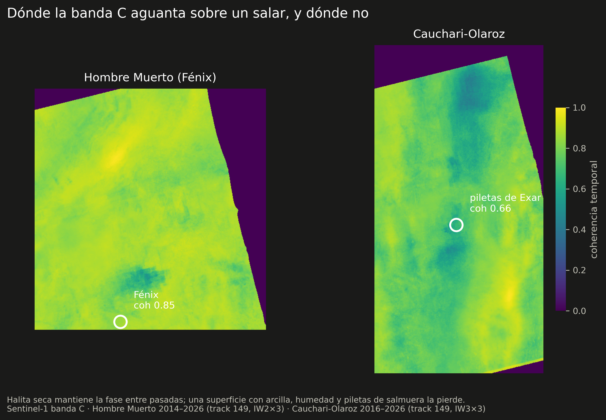
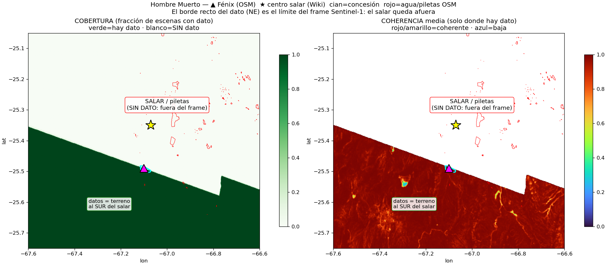
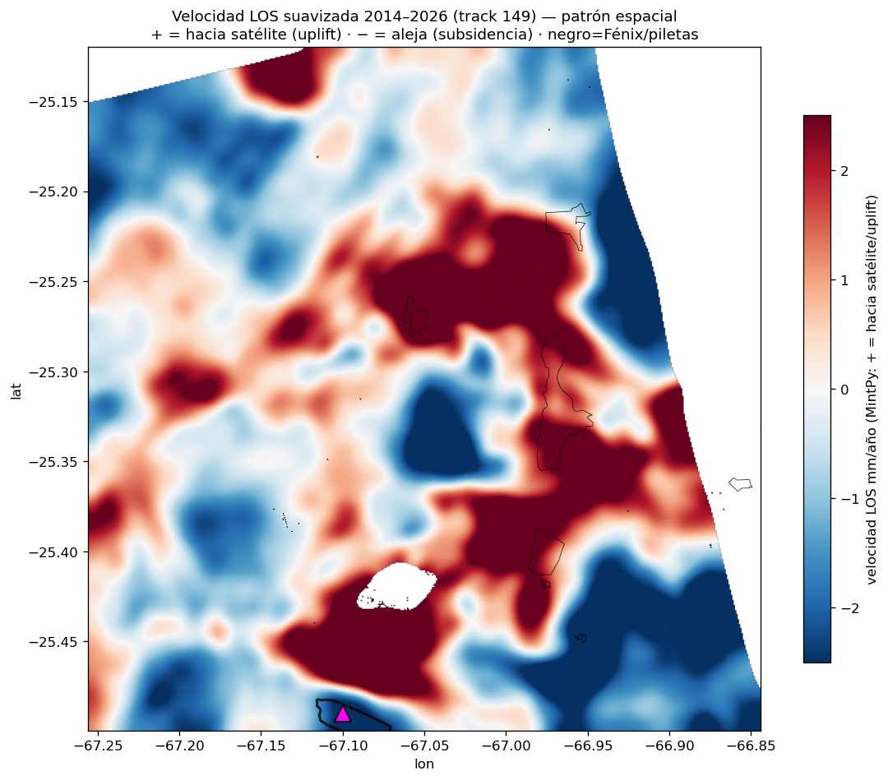
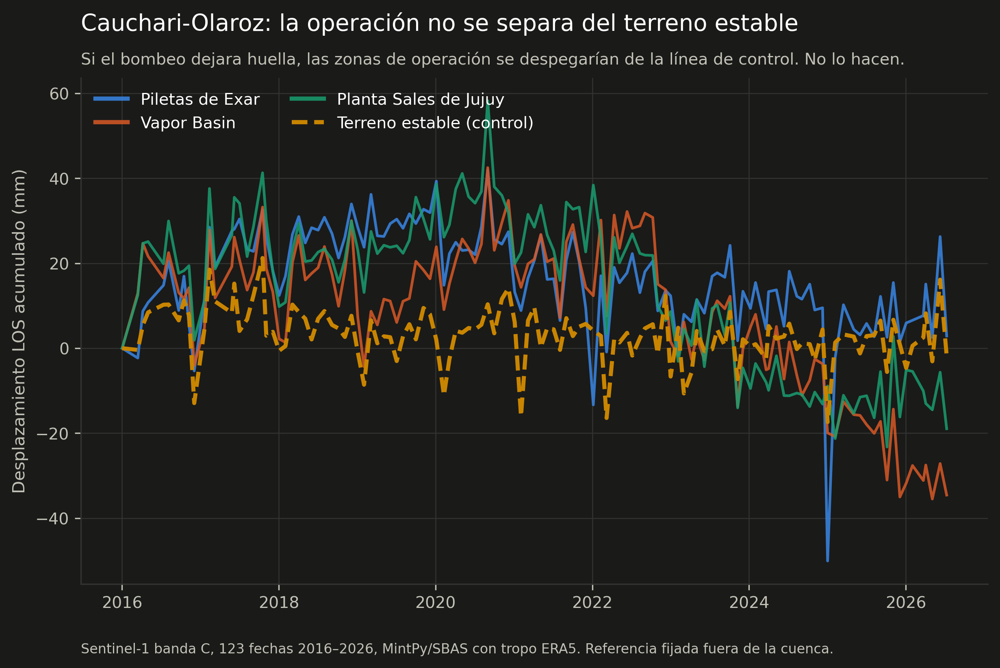

Caso 2 — ¿Se mueve el salar cuando se bombea salmuera?
La hipótesis es directa: si se extrae salmuera más rápido de lo que el sistema recarga, el terreno se compacta y baja. Está medido así en el Salar de Atacama, donde Delgado y colegas encuentran ~1 cm/año de subsidencia acotada al área de extracción1. La pregunta es si se ve en los salares argentinos.
Se midieron dos, con el mismo sensor, el mismo track y el mismo procesamiento. En uno se puede medir y en el otro no — y la conclusión más útil de este caso no es cuánto se hunde cada salar, sino que la diferencia entre los dos se sabe de antemano, mirando la coherencia.
Dónde la banda C aguanta sobre un salar

| Hombre Muerto (Fénix) | Cauchari-Olaroz | |
|---|---|---|
| Superficie | halita seca | arcilla, humedad y piletas |
| Coherencia temporal sobre la operación | 0,85 | 0,66 |
| Serie | 135 fechas, 2014–2026 | 123 fechas, 2016–2026 |
| ¿Se puede medir la operación? | Sí | No |
(Coherencia media en una ventana de 9×9 píxeles centrada en la operación.)
Es una diferencia física, no metodológica. La halita seca de Hombre Muerto mantiene la fase entre pasadas separadas por semanas; una superficie con arcilla, humedad variable y piletas de salmuera la pierde. Y esto es verificable antes de procesar nada: basta mirar la coherencia del stack.
Hombre Muerto: hay señal, y es chica
Sentinel-1 banda C, track 149 ascendente multi-burst, 135 fechas entre octubre de 2014 y mayo de 2026, MintPy/SBAS con corrección troposférica ERA5.
Primero, el error que casi cierra el caso
La primera corrida usó el track 83 descendente y concluyó que el salar decorrelacionaba: 16 % de píxeles coherentes, cero sobre la operación. La lectura tentadora era "la banda C no sirve sobre sal húmeda".
Era falso: el track 83 no cubre el salar. Su huella corta al sur de Fénix.

El dato (verde) llega solo hasta una diagonal recta, que es el borde del frame. El salar, las piletas (contorno rojo) y Fénix (▲) quedan al norte, sin dato. Coherencia cero porque no había nada que medir, no por la sal.
La moraleja operativa
Un cero puede ser un resultado o puede ser un agujero de cobertura, y los dos se ven igual en el mapa. Antes de escribir "no hay señal", hay que verificar que el sensor estuvo mirando el lugar. Esta lección se aplicó después en Cauchari-Olaroz y en la búsqueda de banda L histórica, donde vuelve a aparecer la misma trampa.
Con el track correcto
| Métrica | Track 83 (mal ubicado) | Track 149 (correcto) |
|---|---|---|
| Cobertura sobre el salar | ~0 (fuera del frame) | completa |
| Píxeles coherentes (coh. temporal > 0,7) | ~16 % | ~85 % del AOI |
| Interferogramas / fechas | 136 / 88 | 399 / 135 (2014–2026) |

Promediando por zona y restando el retardo atmosférico común, aparece una tendencia sostenida:
| Zona | Acumulado 2014–2026 | Tasa |
|---|---|---|
| Hotspot NE (−66,99, −25,37) | ~25 mm | ~2,5 mm/año |
| Concesión Fénix | ~18 mm | ~1,1 mm/año |
| Piletas E (−66,9) | ~17 mm | ~1,3 mm/año |
Los límites, sin maquillar: la señal está en el piso de ruido atmosférico (1–2,5 mm/año es del orden del ruido por píxel, y solo se ve limpia promediando por zona); el signo no está confirmado —con la convención de MintPy estos valores serían uplift relativo, y podría ser una mezcla real de sal acumulándose en las piletas y extracción hundiendo otra subzona—; y con una sola geometría no se puede descomponer en vertical y este-oeste.
Cauchari-Olaroz: resultado nulo
Mismo track 149, tres bursts contiguos de IW3, 123 fechas 2016–2026, mismo procesamiento. La cobertura se verificó punto por punto antes de encolar.

Las tres zonas de operación y el terreno estable de control oscilan en la misma banda, sin separarse. Comparando la ventana 2018–2020:
| Zona | Acumulado 2018–2020 | Coherencia |
|---|---|---|
| Piletas de Exar | +15,0 mm | 0,67 |
| Vapor Basin | +32,6 mm | 0,70 |
| Planta Sales de Jujuy | +22,2 mm | 0,62 |
| Terreno estable (control) | +14,7 mm | 0,80 |
La operación no se distingue del control. Todo el campo se corre junto, que es firma de modo común —atmósfera y referencia—, no de deformación localizada.
Y sobre la serie completa las tasas aparentes son mutuamente incoherentes: Vapor Basin da −3,7 mm/año y Cauchari sur +3,2 mm/año. Partes vecinas del mismo salar moviéndose en direcciones opuestas con magnitudes parecidas, y con dispersión residual de 9 a 13 mm alrededor de la tendencia. Eso es ruido.
Una medición publicada que no se reproduce
Existe un antecedente sobre este mismo salar: Lenardón, Farías, Seppi y Carignano2 reportan subsidencia alrededor de las baterías de pozos, con acumulados 2018–2020 entre +12 y −17 cm — un rango de 290 mm.
Sobre la misma ventana, mi rango espacial en todo el AOI coherente es de 96 mm, con mediana +19 mm. Si existiera deformación de esa magnitud, debería verla: es tres veces mi rango completo.
No puedo afirmar que estén equivocados sin ver su procesamiento, y hay que decirlo así. Pero la diferencia tiene una explicación plausible: es un trabajo de workshop que usa la herramienta SBAS de un clic de ASF Vertex, sin enmascarar por coherencia, sobre una superficie que acá mide 0,62–0,72. Un desenrollado de fase defectuoso sobre píxeles decorrelacionados produce exactamente saltos de decímetros, y es el modo de falla más común de esta técnica.
Qué deja el par de casos
- La coherencia decide antes que el método. Sobre halita seca la banda C sirve; sobre un salar con arcilla y piletas, no. Se sabe mirando el stack, sin procesar la serie entera.
- Un resultado nulo bien acotado vale. Decir "acá no se puede medir con este sensor, y este es el piso de ruido" es más útil que forzar un número.
- Una cifra publicada no es una verificación. El único modo de saber si un resultado se sostiene es rehacerlo.
Qué destrabaría cada uno
Para Hombre Muerto el cuello de botella es la atmósfera, no la coherencia: GACOS (corrección troposférica más fina que ERA5, gratis) y banda L —SAOCOM de CONAE, o ALOS-1 para la historia 2007–2011, que se baja sin trámite—. La banda L además resolvería el signo.
Para Cauchari-Olaroz el problema es la longitud de onda: la banda C no aguanta esa superficie. Solo la banda L tiene chance. Y acá sí pasan tres geometrías —dos tracks ascendentes y uno descendente— así que si hubiera señal, se podría descomponer en vertical y este-oeste.
Procesamiento completo
Scripts, configuraciones y series están en el repo hermano litio-insar.
-
Delgado, F., Shreve, T., Borgstrom, S., León-Ibañez, P., Castillo, J. y Poland, M. (2024). A global assessment of SAOCOM-1 L-band stripmap data for InSAR characterization of volcanic, tectonic, cryospheric, and anthropogenic deformation. IEEE TGRS. doi:10.1109/TGRS.2024.3423792 ↩
-
Lenardón, M., Farías, C. A., Seppi, S. A. y Carignano, C. A. (2023). Terrain Subsidence in the Salar de Olaroz (Jujuy, Argentina) Caused by Lithiferous Brine Extraction, Detected by Multi-Temporal SAR Interferometry. XX Workshop on Information Processing and Control. IEEE Xplore ↩